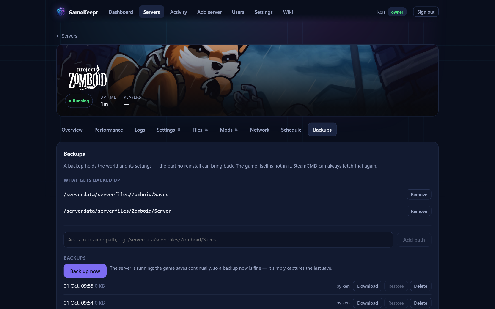

Backups

A game install is redownloadable; the world is not. Backups hold the small irreplaceable part — worlds, saves, the server's own config — never the tens of gigabytes SteamCMD can fetch again.
What goes in
The game registry knows where each recognised game keeps its saves and searches the server for those directories; you confirm once, and that choice is what every backup contains. For unrecognised games, add the directory yourself (the Files tab helps you find it). A backup with nothing configured is refused rather than quietly archiving the wrong thing.
Making and restoring
- Back up now works while the server runs: games flush their saves continually, and a mostly-consistent copy beats none.
- Restore only works while the server is stopped, and never without a safety copy of what it is about to replace — a restore that turns out to be the wrong call must itself be undoable. Restores overlay: files created since the backup are left alone.
- Each backup can be downloaded as a
.tar.gzfor a copy somewhere else entirely.
Rotation and storage
The newest ten per server are kept; safety copies made before a restore do not count against that. Backups live in the portal's own data volume, so they survive the game container being recreated and ride along with whatever backs up the portal itself.
For a nightly backup, add a backup action on the Schedule tab.